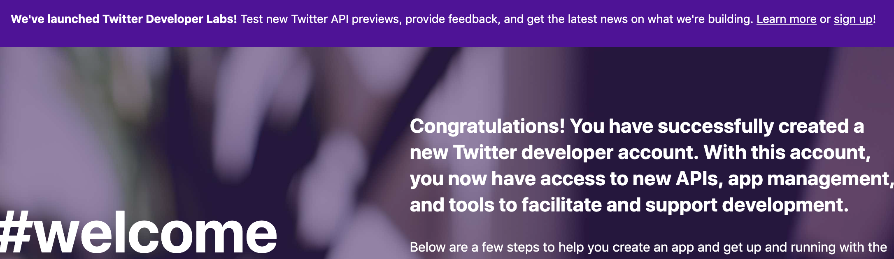
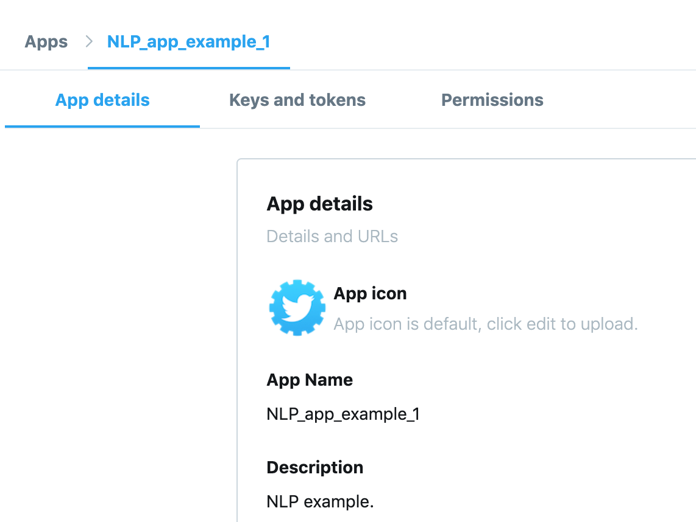
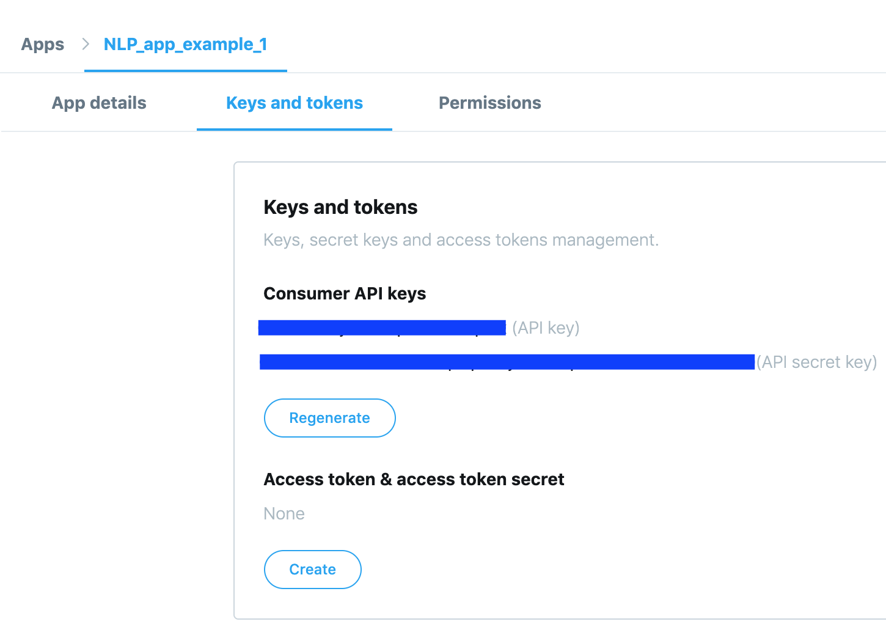
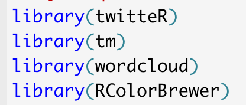

NLP: Mining Twitter
2019-09-16
NLP Important Terms and Concepts
- Document - The individual text document (e.g. a resume)
- Corpus - The collection of documents (e.g. A group of resumes)
- Bag-of-Words - unordered collection of words (e.g. list of unordered words)
- n-grams - contiguous sequence of n items from a given sequence of text (e.g. [‘A’,‘G’,‘C’,T’]
- Stopwords - words that appear too often to be of great importance (e.g. the,a,I,etc…)
- Tokens - Any combination of characters (words)
- Stemming - Process to remove suffixes of words (e.g. run,runner,running all reduce to base word - run)
- TF-IDF : term frequency-inver document frequency is a statistic that tells how important a word is in a given corpus, its a way of determining high-information words
- Term Document Matrix - representation of a document collection as vectors
Part 1: Install necessary packages
#install.packages('tm',repos='http://cran.us.r-project.org')
#install.packages('twitteR',repos='http://cran.us.r-project.org')
#install.packages('wordcloud',repos='http://cran.us.r-project.org')
#install.packages('RColorBrewer',repos='http://cran.us.r-project.org')
#install.packages('e1017',repos='http://cran.us.r-project.org')
#install.packages('class',repos='http://cran.us.r-project.org')Part 2: Set up your Twitter developer account
Pre-requisite: you have a regular Twitter account.
Go to https://developer.twitter.com/en/apps . Follow their steps to register with their developers’ platform. Finally, you succeed:

Create an app:

Under “Keys and tokens” tab, note the API keys (they will be needed for your R application to connect with Twitter).
Create also Access tokens for your application (they are needed for authentication). Altogether, you will have a set of 4 keys and tokens.

Part 3: Twitter Mining
Call libraries:

Connect to Twitter:
setup_twitter_oauth(consumer_key = ckey, consumer_secret = skey, access_token = token, access_secret = sectoken)Search for tweets containing word “soccer”, in 1000 tweets, in English language: (‘searchTwitter’ function also accepts dates, locales, etc.)
soccer.tweets <- searchTwitter('soccer', n = 1000, lang = 'en')
head(soccer.tweets, 2)## [[1]]
## [1] "rachelwill: RT @allierose715: Went to the adidas employee store today because we got a pass through Colin’s work. I was hoping they might have a women’…"
##
## [[2]]
## [1] "JP206ATC: RT @chronMatt: Saturday’s Girls Soccer: Toledo Takes Out Orcas Island, Late Goal Lifts Bearcats Past Bulldogs, Napavine Leaves Evergreen Lu…"Get text data out of these tweets:
soccer.text <- sapply(soccer.tweets, function(x) x$getText())
soccer.text[1:2]## [1] "RT @allierose715: Went to the adidas employee store today because we got a pass through Colin’s work. I was hoping they might have a women’…"
## [2] "RT @chronMatt: Saturday’s Girls Soccer: Toledo Takes Out Orcas Island, Late Goal Lifts Bearcats Past Bulldogs, Napavine Leaves Evergreen Lu…"Clean text data
We are going to remove emoticons and create a corpus.
soccer.text <- iconv(soccer.text, from = 'UTF-8', to = 'ASCII')Create corpus of our data (with Corpus function from the ‘tm’ (text manipulation) library):
soccer.corpus <- Corpus(VectorSource(soccer.text) )Create a Document Term Matrix
term.doc.matrix <- TermDocumentMatrix(soccer.corpus,
control = list(removePunctuation = TRUE,
stopwords=c('soccer', 'http', 'https', stopwords('english')),
removeNumbers = TRUE,
tolower = TRUE))
term.doc.matrix <- as.matrix(term.doc.matrix)Get word count:
word.freq <- sort(rowSums(term.doc.matrix), decreasing = T)
dm <- data.frame(word=names(word.freq), freq = word.freq)Create the word cloud:
wordcloud(dm$word, dm$freq, random.order = F, colors = brewer.pal(8, 'Dark2'))